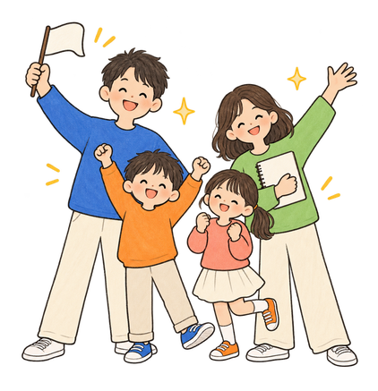
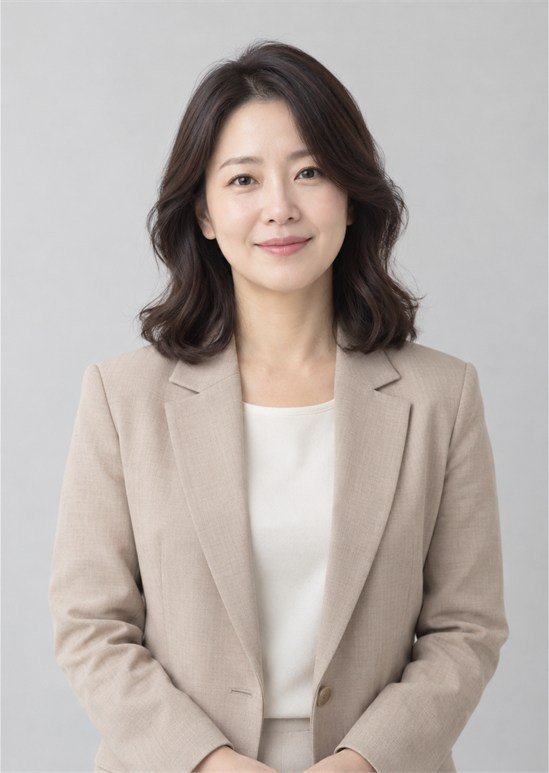
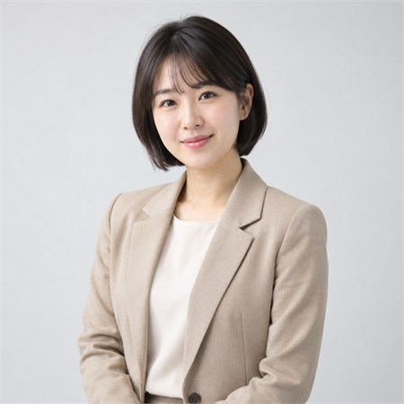
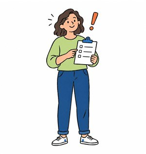
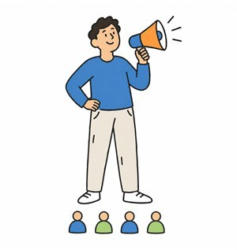
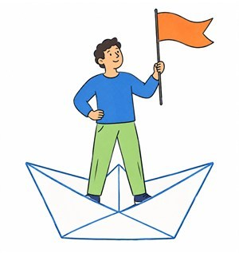
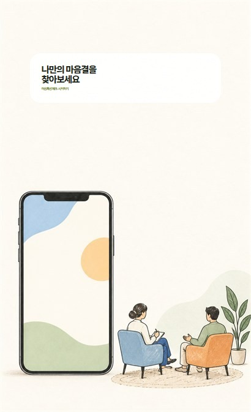
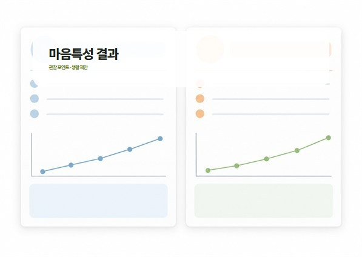
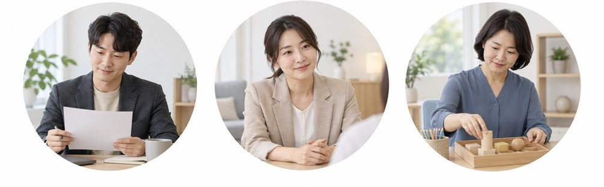
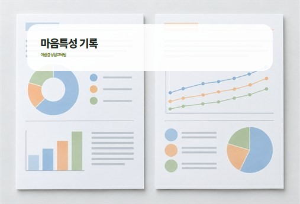

Mind Pattern Check


마음을 이해하는 기준
아람결의 평가는
현재의 어려움을 살피고
반복되는 반응을 확인하며
내게 맞는 대응을 찾는
상담의 첫 단계입니다.
아람결 상담 원칙
해석을 앞세우기보다 당사자의 말과 생활 장면을 먼저 듣습니다.
상담 목표와 진행 방법은 보호자·내담자와 협의하고 이해하기 쉽게 설명합니다.

마음특성 체크는 상담 전 생활 습관과 관계 방식을 정리하는 보조 자료입니다.
결과는 진단이나 성격 낙인이 아닙니다. 현재 겪는 어려움을 대화로 풀어 보기 위한 참고 정보로 사용합니다.



각 유형은 우열을 정하지 않으며 상황에 따라 함께 나타날 수 있습니다.
결과표는 상담자와 함께 읽고 일상에서 관찰한 내용과 맞춰 봅니다.
MPC-I(영유아)
MPC-C(아동)
MPC-S(초등)
MPC-Y(청소년)
MPC-A(성인)
아동·가족 관계 확인
개인상담 초기 생활 점검
보육·교육기관 집단 프로그램 사전 확인
온라인 사전 질문지 개편
휴대전화에서도 작성하기 쉬운 단계형 문항으로 구성
제출 내용은 첫 상담에서 함께 확인합니다
기초과정은 소규모 사례 토론으로 진행합니다
상담·교육 종사자가 기록과 면담을 연습하는 과정
수료 여부는 출석과 과제 피드백을 기준으로 확인합니다




나는 언제 쉬어야 할까요?
긴장을 낮추는 활동과 환경을 찾아봅니다
피로 신호와 회복 습관을 확인하면 실행 가능한 휴식 계획을 세울 수 있습니다
요즘 가장 필요한 것은 무엇일까요?
관계와 일상에서 자주 놓치는 필요를 확인합니다
원하는 바를 구체적인 말로 표현하는 연습은 갈등을 줄이는 데 도움이 됩니다
불편한 상황에서 보이는 반응을 살펴봅니다
가정·학교·직장에서 반복되는 선택을 비교해 보고 현재 바꾸고 싶은 한 가지를 정합니다